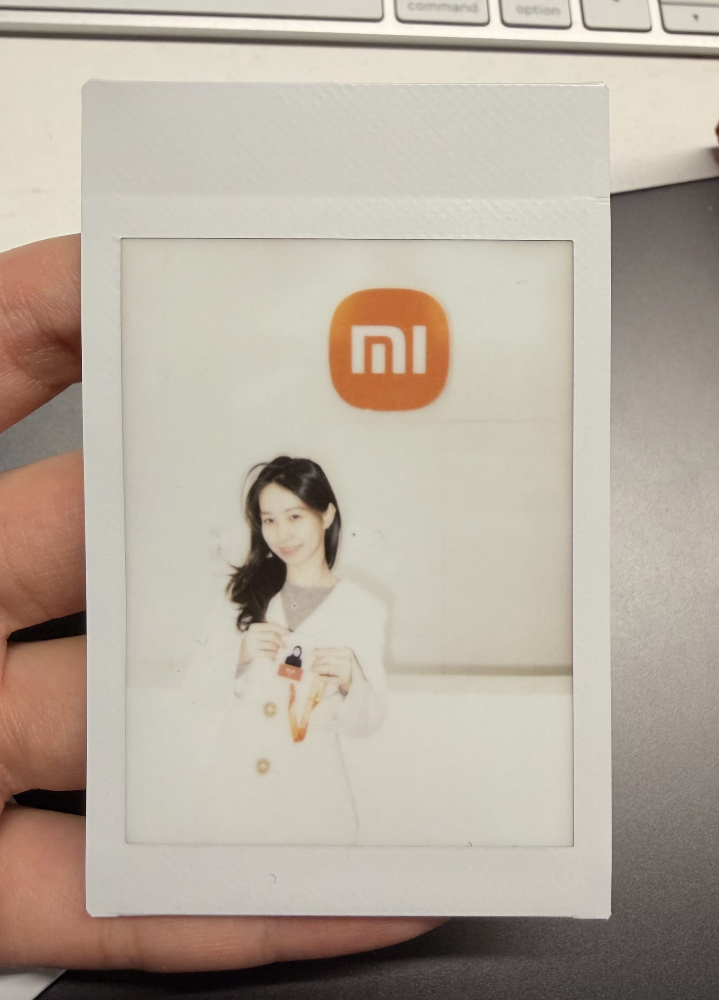

Involved in shaping the cockpit system UI of a leading Chinese new-energy vehicle — from the domestic market to Europe.

I previously served as the HMI designer for Xiaomi's automotive digital cockpit, independently responsible for the end-to-end design of eight system modules — covering the central control screen and rear-seat screens — and participating in the definition and iteration of the System UI design specifications.
This experience taught me to find a design balance between speed in China, compliance in Europe, and cross-team collaboration. I typically use AI tools (Figma Make, Claude) as design accelerators — backtesting design decisions, quickly exploring possibilities, and simulating interaction logic, so one person can cover ground that would normally take several.
Responsible for the design and iteration of the System UI and 8 core modules (including alarms, overseas expansion, and custom functions), spanning the central control screen and the rear screen.
Put AI into the workflow — accelerating design verification and exploration of multiple solutions through tools like Figma Make, Claude, Gemini and Lovable.
Led the adaptation for overseas markets — liaising with the Google UX and Android Auto teams to complete multilingual support, Google system integration, and design delivery for the German market.
Cross-team and cross-enterprise collaboration — connecting with external partners across product and engineering to drive end-to-end delivery of the in-cabin experience.
Hardware constraints, cross-scenario consistency, and multi-vehicle compatibility — imperceptible to users — precisely determine whether the experience is good or bad. This is something I only truly understood after working on eight modules: the hardest part of a product is often not on the screen.
I'm used to using Figma Make and Claude to reverse-engineer design decisions, explore multiple possibilities, and simulate interaction logic. AI can't replace design judgment, but it lets one person do the work of three — a real leverage point in a fast-paced car company.
HMI designers face hardware constraints (screen, seat, viewing distance) and product ambitions at the same time. Apple's Dynamic Island is a prime example of "using design to compensate for hardware" — in the early stages of Chinese automakers, this ability was scarce.
Domestic EV users prefer a "flexible framework" style of functional density (versus Tesla's minimalist full-screen design), while the European market has strict requirements for compliance, readability and viewing-distance standards. This experience made me comfortable switching quickly between the two design languages.
"Yidan, I can really sense that you've fully grasped what we're currently covering. Your comprehension is so high that you can fully master even the business you've just come into contact with. I can tell you're now seeking out more challenging work."
— Design Mentor"I saw big potential in you, and I'm sure you'll have a fantastic career ahead!"
— Product Manager